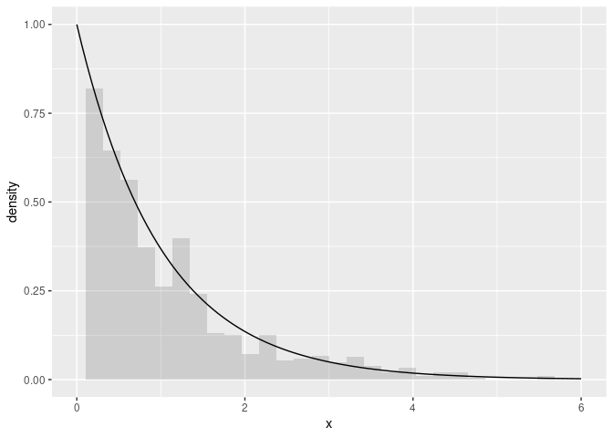

An algebra over maximum likelihood estimators (MLE).
MLEs have many desirable, well-defined statistical properties. We define an algebra over MLEs.
Installation
You can install the development version of algebraic.mle from GitHub with:
# install.packages("devtools")
devtools::install_github("queelius/algebraic.mle")MLE of rate parameter in exponential distribution
In what follows, to demonstrate the algebraic.mle R package, we consider a random sample from exponentially distributed random variable Xi ∼ EXP (λ=1) for i = 1, …, n.
We generate an observation from this random sample with:
We have observed a sample of size n = 1000. We show some observations from this sample (data frame) with:
print(x)
#> # A tibble: 1,000 × 1
#> x
#> <dbl>
#> 1 0.0262
#> 2 1.34
#> 3 0.296
#> 4 2.30
#> 5 0.490
#> 6 1.60
#> 7 0.659
#> 8 1.45
#> 9 1.08
#> 10 0.520
#> # … with 990 more rowsWe show a histogram of the sample, and a plot of the exponential function’s pdf, with:
library(ggplot2)
ggplot(x, aes(x=x)) + geom_histogram(aes(y=..density..),alpha=.2) +
xlim(0,6) +
geom_function(fun=dexp)
#> Warning: Removed 2 rows containing non-finite values (stat_bin).
#> Warning: Removed 2 rows containing missing values (geom_bar).
If we would like to estimate λ, we can do so using maximum likelihood estimation as implemented by the algebraic.mle package:
library(algebraic.mle)
#>
#> Attaching package: 'algebraic.mle'
#> The following object is masked from 'package:stats':
#>
#> nobs
rate.hat <- mle_exp(x$x)
summary(rate.hat)
#> Maximum likelihood estimator, of type mle_exp ,
#> is normally distributed with mean
#> [1] 0.9775105
#> and variance-covariance
#> [,1]
#> [1,] 0.0009555267
#> ---
#> The asymptotic mean squared error 0.0009555267
#> The asymptotic 95% confidence interval is
#> 2.5 % 97.5 %
#> 1 0.9266654 1.028356
#> The log-likelihood is -1022.746
#> The AIC is 2047.493We can show the point estimator with:
point(rate.hat)
#> [1] 0.9775105We can show the Fisher information and variance-covariance matrices with:
fisher_info(rate.hat)
#> [,1]
#> [1,] 1046.543
vcov(rate.hat)
#> [,1]
#> [1,] 0.0009555267(If rate.hat had been a vector, vcov would have output a variance-covariance matrix. We may consider the above outputs 1 × 1 matrices.)
We can show the confidence interval with:
confint(rate.hat)
#> 2.5 % 97.5 %
#> 1 0.9266654 1.028356Sampling distribution of the MLE
In general, to estimate the sampling distribution, we generate B = 10000 samples (of size 1000) and their corresponding estimators, θ̂(1), …, θ̂(B).
Normally, we do not have B samples, and if we did, we would gather all B samples into one sample (or used a weighted MLE), which would contain more (Fisher) information about θ.
However, a nice property of MLEs is that, asymptotically, they converge to a normal distribution with a mean given by the true parameter, in this case λ, and a variance-covariance given by the inverse of the Fisher information matrix, i.e., λ̂ ∼ N(λ,I−1(λ)) where I is the Fisher information matrix, in this case I(λ) = n/λ2.
We observe the empirical sampling distribution of θ̂ overlaid with the theoretical asymptotic distribution with:
B <- 1000
data0 <- numeric(length=B)
for (i in 1:B)
{
x <- stats::rexp(n,rate)
data0[i] <- point(mle_exp(x))
}
ggplot(tibble(rate.hat=data0), aes(x=rate.hat)) +
geom_histogram(aes(y=..density..),alpha=.3,bins=50) +
geom_function(fun=function(x) { dnorm(x,mean=rate,sd=rate/sqrt(n)) })
We do not know λ, but we may estimate it from a sample, and thus we may approximate the sampling distribution of λ̂ with N(λ̂,I−1(λ̂)).
Since we are only giving one sample, we cannot do as we did before to provide B estimates of λ. However, we can sample from the approximation of the asymptotic distribution of λ̂ with:
data1 <- sampler(rate.hat)(B)We visually compare the two MLE samples, data0 and data1, with:
data <- data.frame(values=c(data0,data1), group=c(rep("empirical",B),rep("approximation",B)))
ggplot(data,aes(x=values,fill=group)) +
geom_histogram(aes(y=..density..),position="identity", alpha=0.2, bins=50)
Due to sampling error, we see that the approximation, the estimate of the asymptotic sampling distribution N(λ̂,λ̂/n1/2), is shifted to the left of the sample from the true distribution, but they appear to be quite similar otherwise.
Invariance property of the MLE
An interesting property of an MLE λ̂ is that the MLE of g(λ) is given by g(λ̂).
The method fn_distr applied to mle objects takes a function of the mle and a simulation sample size and then computes its MLE, i.e., returns an object of type fn_mle, which is also an MLE with a an asymptotic sampling distribution.
Example
Suppose we are interested in g(λ) = 2λ:
g <- function(lambda) 2*lambda
g.hat <- fn_distr(rate.hat,g)
point(g.hat)
#> [1] 1.955021
vcov(g.hat)
#> [,1]
#> [1,] 0.00384802
confint(g.hat)
#> 2.5 % 97.5 %
#> 1 1.852987 2.057055Let’s compare this with a simulation of the actual distribution.
We know that the MLE λ̂ ∼ N(λ,λ2/n). We seek a transformation g(λ̂) such taht its expectation is 2λ, i.e., g(λ) = 2λ. Then, var (g(λ̂)) = 4λ2/n. Letting λ = 1, we see that g(λ̂) ∼ N(2λ,4λ2/n). We simulate drawing n = 1000 observations from
Weighted MLE: a weighted sum of maximum likelihood estimators
Since the variance-covariance of an MLE is inversely proportional to the Fisher information that the MLE is defined with respect to, we can combine multiple MLEs of θ, each of which may be defined with respect to a different kind of sample, to arrive at the MLE that incorporates the Fisher information in all of those samples.
Consider k mutually independent MLE estimators of parameter θ, θ̂1, …, θ̂k, where θ̂j ∼ N(θ,Ij−1(θ)).
Then, the maximum likelihood estimator of θ that incorporates all of the data in θ̂1, …, θ̂k is given by the inverse-variance weighted mean, θ̂ = (∑Ij(θ))−1(∑Ij(θ)θj).
To evaluate the performance of this estimator, we generate a sample of N = 1000 from EXP (λ=1). We compute the MLE for the observed sample, denoted by θ. We then divide the observed sample into r = 5 sub-samples, each of size N/r = 100, and compute the MLE for each sub-sampled, denoted by θ(1), …, θ(r). Finally, we come these MLEs into the weighted MLE, denoted by θw.
N <- 1000
r <- 5
data3 <- rexp(N)
data3.mat <- matrix(data3,nrow=r)
mles <- list(length=r)
for (i in 1:r)
mles[[i]] <- mle_exp(data3.mat[i,])
mle.wt <- mle_weighted(mles)
summary(mle.wt)
#> Maximum likelihood estimator, of type mle_weighted ,
#> is normally distributed with mean
#> [,1]
#> [1,] 1.004032
#> and variance-covariance
#> [,1]
#> [1,] 0.001013711
#> ---
#> The asymptotic mean squared error 0.001013711
#> The asymptotic 95% confidence interval is
#> 2.5 % 97.5 %
#> 1 0.9516617 1.056402
#> The log-likelihood is -987.5218
#> The AIC is 1977.044
mle.tot <- mle_exp(data3)
summary(mle.tot)
#> Maximum likelihood estimator, of type mle_exp ,
#> is normally distributed with mean
#> [1] 1.00964
#> and variance-covariance
#> [,1]
#> [1,] 0.001019373
#> ---
#> The asymptotic mean squared error 0.001019373
#> The asymptotic 95% confidence interval is
#> 2.5 % 97.5 %
#> 1 0.957124 1.062157
#> The log-likelihood is -990.4059
#> The AIC is 1982.812We see that θ̂ and θ̂w model approximately the same sampling distribution for θ.